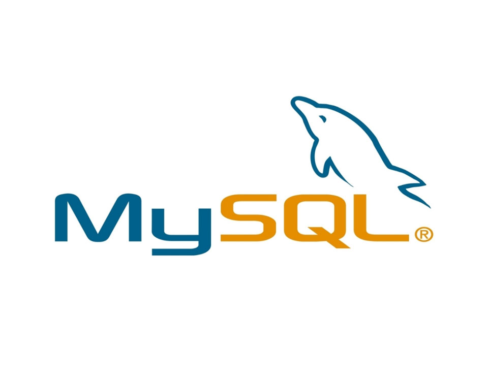
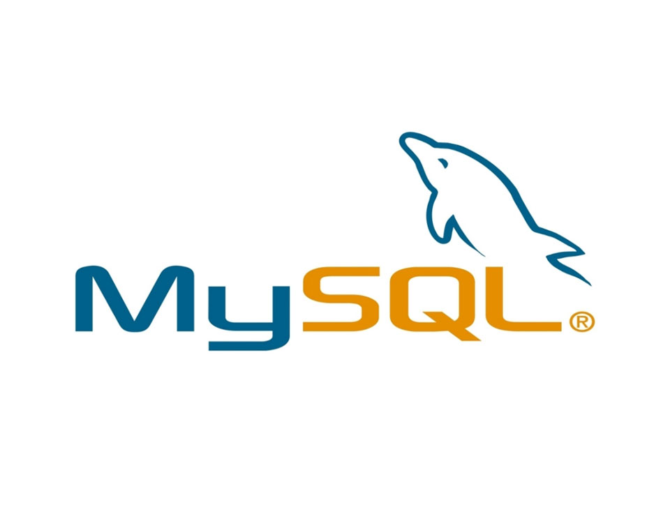

어떻게 살아가고 싶은가 인간은 누구나 행복하고 싶어합니다. 저 역시 행복하게 살고 싶습니다. 행복에 대한 답을 찾아가는 중이에요. 항상 행복할수만도 없음을 잘 알고 있습니다. 그렇지만 믿습니다. 긍정적으로 하고싶은 것을
하면서 살아가고자 합니다. 어제의 나보다 더 나은 내가 되고자 하며, 주위 사람들과 함께 긍정적인 영향을 주고 받는다면 행복하게 살았다고 이야기 할 수 있을 것 같습니다.
어떻게 능력을 개발 할 것인지 웹, 특히 javascript의 미래가 밝다고 생각해서 javascript 위주로 능력을 개발해왔습니다. 그 생태계가 가히 폭발적이며, 범용성이 매우 뛰어나기 때문입니다.
인프런이라는 사이트에 듣고자 하는 강의를 사두고 다 보지는 못했습니다. 블록체인과 인공지능은 깔짝깔짝 해봤습니다. 요즘에는 IOS 개발을 공부하고 있습니다. 재밌어요 그냥. 웹게임을 개발하기 위해 Phaser3를
스터디하기도 했습니다. 제가 프로그래밍을 배우면서 가장 기쁘게 생각한건 이처럼 배울게 너무 많은 것입니다. 그런데 배울 것이 너무 많기 때문에 버거운 것이 사실입니다. 제가 가지지 못한 부분을 채워줄 수
있는 사람들을 만나고 싶습니다. 또한 제가 알고 있는 부분이 있다면 나눌 수 있는 그런 사람들을 만나고자합니다. 함께 알아나갈때가 가장 많이 배울 수 있다고 생각합니다. 그렇게 경험을 했었구요. 기본적으로
관련 전공자가 아니기때문에 기초가 부족하다고 매번 느끼고 있습니다. 감사하게도 요즘에는 인터넷으로 배울 수 있는 강의들이 많다는 것을 알게 되었습니다 알고리즘, 자료구조, OS같은 내용에 대해 부족한 부분은
채우기 위해 노력합니다. Youtube의 힘에 새삼 놀라워합니다. 대다수의 자료나 강의가 영어 위주로 되어있어 영어공부도 틈틈히 하고 있습니다. 살면서 이렇게 영어 실력에 대한 갈망이 없었는데, 개발 공부를
하게 되면서 그 필요성을 절실히 느끼게 되었고, 필요성이 있다보니 공부또한 자연스레 하게됩니다. // 기술외에 어떤 역량을 가지고 있는지 첫째, 피드백이 빠릅니다. 저는 줄 곧 어떤 조직을 대표하는 집단에
자주 속해왔습니다. 고등학생때 반장과 전교부회장을 시작으로, 대학생때는 학부 신입생 대표 , 학생회 부회장을 했습니다. 동아리 내에서도 의사 결정권을 가진 인원으로 활동했으며, 군에서도 장교로 복무한 경험이
있습니다. 그런 위치에 있으면서 제가 가장 인정받는 부분은 비판에 대한 수용이었습니다. 소속원들의 다양한 의견을 들어보고 합리적인 의사결정을 하도록 노력했습니다 원칙을 기반으로 공정하게 실행하되, 잘못된
것이 있다면 빠르게 인정하고 더 나은 방향으로 개선하고자 했습니다. 언제나 성공적인 선택을 한것도 아니고 업무를 막 잘했다고 자부하긴 어렵습니다. 잘못 판단해서 돌아간적도 많이 있었습니다. 하지만 저는
두번 실패하지 않습니다. 실패로부터 배우는 것을 두려워하지 않습니다. 이러한 제 역량은 스타트업같은 조직에서 충분한 퍼포먼스를 낼 수 있는 기폭제가 될 것이라 생각합니다. 둘째, 심성이 착하고 사람들과
친화력이 있습니다. 이건 말로 표현할 수 없기때문에, 직접 만나보시면 압니다.


 
